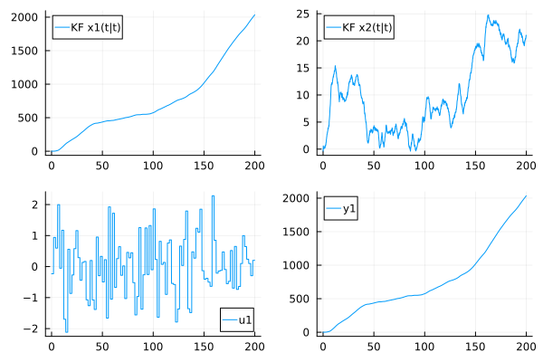
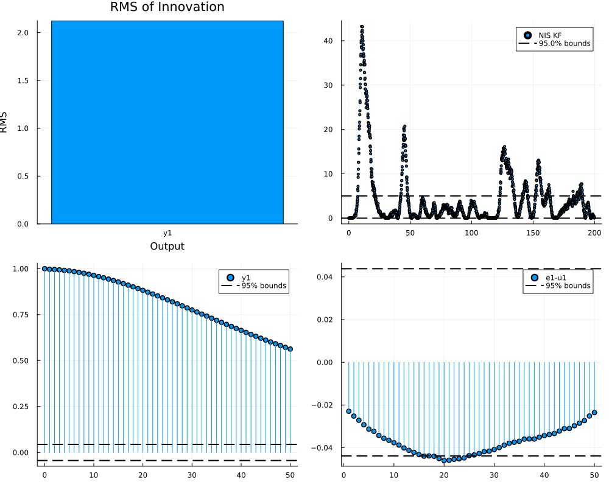
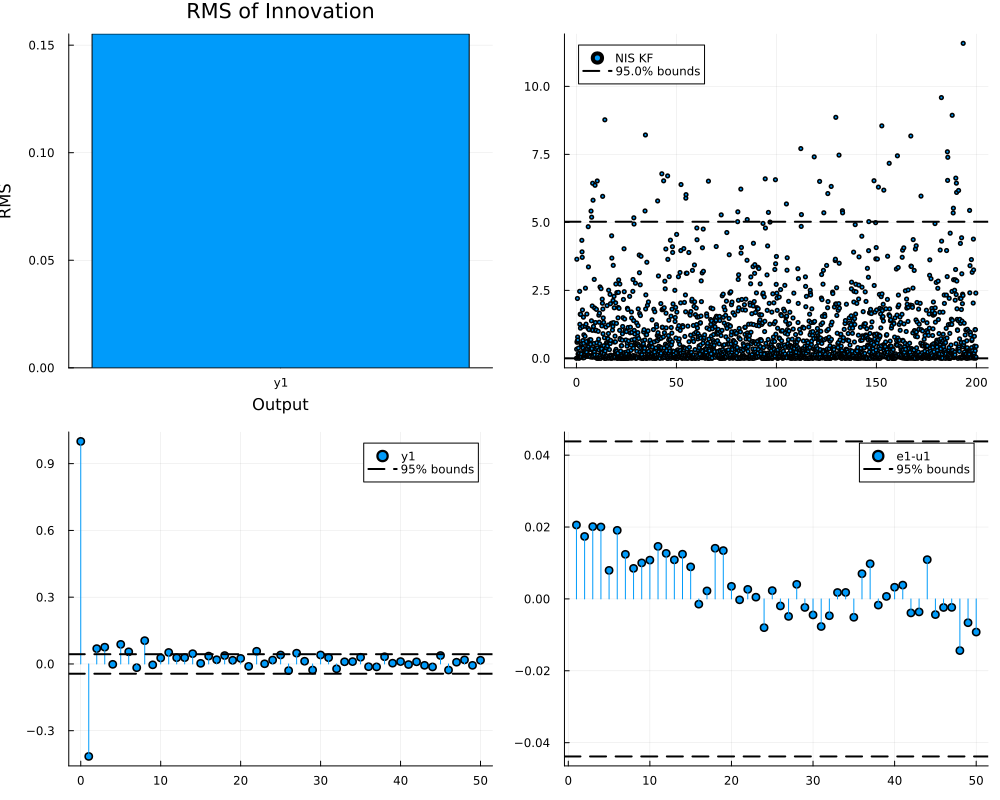
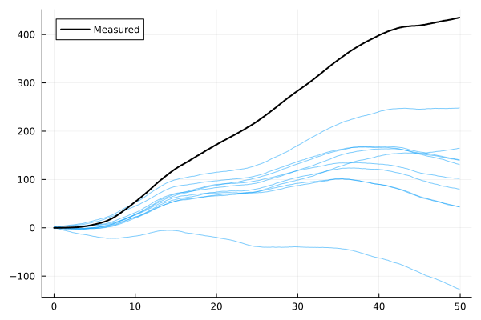

Estimating noise covariances
The covariance matrices $R_1$ of the dynamics noise and $R_2$ of the measurement noise determine the gain of a Kalman-type filter, and thereby the trade-off between the response time of the filter and the sensitivity of the estimate to measurement noise. When data is available, these matrices can be estimated by maximizing the likelihood of the data, which, among the methods described in Parameter Estimation, is the recommended approach for noise covariances. This page demonstrates
- diagnosis of a filter with inappropriate covariance matrices,
- maximum-likelihood estimation using
autotune_covariances, - the number of covariance parameters that can be determined from data,
- estimation of a physically structured parameterization of the covariance matrices using a custom cost function,
- estimation when the noise enters through a noise input of the dynamics,
- MAP estimation for short data sets, and
- validation of the tuned filter.
Model and data
We consider a mass that is moved by a known force $u$, and whose position is measured. With the state variables position and velocity, the continuous-time dynamics are those of a double integrator
\[\begin{aligned} \dot p &= v \\ \dot v &= u + w \end{aligned}\]
where $w$ is an unknown disturbance force, for example due to friction. The disturbance acts on the velocity only, since the position cannot change without a change of the velocity. If $w$ is modeled as continuous-time white noise with intensity $\sigma_w^2$, the covariance matrix of the discrete-time dynamics noise is $\sigma_w^2$ times a fixed matrix that depends on the sample interval only, given by double_integrator_covariance_smooth. Although $R_1$ is a $2 \times 2$ matrix, it is thus determined by a single parameter. See Discretization for the discretization of covariance matrices of continuous-time noise processes.
We simulate data from this system with a piecewise-constant random input and the true noise parameters $\sigma_w$ and $\sigma_e$, where $\sigma_e$ is the standard deviation of the measurement noise:
using LowLevelParticleFilters, LinearAlgebra, StaticArrays, Distributions, Statistics, Random
using Plots
using LowLevelParticleFilters: SimpleMvNormal
Ts = 0.1 # Sample interval
nx, nu, ny = 2, 1, 1
A = SA[1 Ts; 0 1]
B = SA[Ts^2/2; Ts;;]
C = SA[1.0 0]
σw, σe = 0.5, 0.1 # True noise standard deviations
R1_true = double_integrator_covariance_smooth(Ts, σw^2)
R2_true = SA[σe^2;;]
d0 = SimpleMvNormal(SA[0.0, 0.0], SMatrix{2,2}(1.0I(2)))
kf_true = KalmanFilter(A, B, C, 0, R1_true, R2_true, d0; Ts)
T = 2000 # Number of samples
levels = randn(T ÷ 20 + 1)
u = [SA[levels[(k-1) ÷ 20 + 1]] for k in 1:T] # Piecewise-constant input
x, u, y = simulate(kf_true, u)
sol_true = forward_trajectory(kf_true, u, y)
plot(sol_true, plotx=false, plotxt=true, plotyh=false)
Diagnosis of a mistuned filter
We construct a filter with diagonal covariance matrices, where the dynamics noise covariance is much too small and the measurement noise covariance much too large:
R1_0 = SMatrix{2,2}(Diagonal([1e-4, 1e-4]))
R2_0 = SA[1.0;;]
kf0 = KalmanFilter(A, B, C, 0, R1_0, R2_0, d0; Ts)
sol0 = forward_trajectory(kf0, u, y)
validationplot(sol0)
The function validationplot shows four diagnostics based on the innovations (one-step prediction errors) $e$ and their covariance $S$ computed by the filter:
- the root mean square of the innovation of each output,
- the normalized innovation squared (NIS) $e^T S^{-1} e$, which, for a correctly tuned filter, follows a $\chi^2$ distribution with $n_y$ degrees of freedom; the dashed lines indicate the bounds within which 95% of the samples are expected,
- the autocorrelation of the innovations, which is zero for nonzero lags for a correctly tuned filter, since the innovations are then white, and
- the cross-correlation between the innovations and past inputs, which is zero for a correctly tuned filter and a correct model of the input dynamics.
For the mistuned filter, the innovations are strongly correlated in time, since the filter reacts too slowly to the disturbance force. The NIS is also inconsistent with its expected value $n_y$:
nis(sol) = [e'*(S\e) for (e, S) in zip(sol.e, sol.S)] # sol.S contains Cholesky factorizations
mean(nis(sol0))4.313381363858781Measuring the measurement noise covariance
The measurement noise covariance $R_2$ can often be determined independently of the dynamics, for example from the sample covariance of sensor data recorded while the system is at rest, or from the data sheet of the sensor. If $R_2$ is known, it is generally preferable to keep it fixed and to estimate the dynamics noise covariance only. A value of $R_2$ measured in this way is also a suitable initial guess for the estimation below. Note, however, that the maximum-likelihood estimate of $R_2$ may differ from the measured value since the estimate also accounts for model errors that appear in the outputs.
Maximum-likelihood estimation using autotune_covariances
The function autotune_covariances maximizes the log-likelihood of the data with respect to the covariance matrices, using the filter, the inputs and the measurements stored in a filtering solution. The covariance matrices of the filter in the solution are used as the initial guess. The function requires the package LeastSquaresOptim.jl to be loaded, since the optimization is performed using a Gauss-Newton method (Levenberg-Marquardt).
The log-likelihood is represented as a sum of squared residuals, where one residual per time step represents the term $\frac{1}{2}(\log\det S + n_y \log 2\pi)$. Since this term is negative when the innovation covariance $S$ is small (for a scalar output, whenever $S < 1/(2\pi)$), a constant offset is added inside the square root. The offset does not change the location of the optimum, but it has to be large enough for the term to remain positive for all covariance matrices that the optimizer evaluates. By default, autotune_covariances computes the offset from the innovation covariances of the solution, with a margin, and it issues a warning if the offset turns out to be too small during the optimization. When LowLevelParticleFilters.prediction_errors! is used directly in a custom residual function, as in the sections below, the offset is chosen by the user, and the error message of prediction_errors! indicates the required value.
We first optimize the diagonal entries of the covariance matrices (the default), and then full covariance matrices:
using LeastSquaresOptim
res_diag = autotune_covariances(sol0; diagonal = true, show_trace = false)
res_full = autotune_covariances(sol0; diagonal = false, show_trace = false)
(; true_filter = sol_true.ll, initial = sol0.ll, diagonal = res_diag.sol_opt.ll, full = res_full.sol_opt.ll)(true_filter = 1187.4198540054529, initial = -6200.650929083451, diagonal = 886.1794393890701, full = 1187.4891739007858)Both optimized filters attain a log-likelihood that is slightly larger than that of the true filter, which is expected for a maximum-likelihood estimate. The estimated covariance matrices are, however, different from the true ones, and from each other:
res_diag.R1, res_full.R1, R1_true([0.021974276157162454 0.0; 0.0 0.018694329426991334], [9.353162835132417e-13 -1.53926558203247e-7; -1.53926558203247e-7 0.025331949991611733], [8.333333333333336e-5 0.0012500000000000002; 0.0012500000000000002 0.025])res_diag.R2, res_full.R2, R2_true([1.0764156794691746e-17;;], [0.01011402663392802;;], [0.010000000000000002;;])The variance of the velocity noise and the measurement noise are estimated accurately, while the remaining entries of $R_1$ are not. The next section explains why.
How many covariance parameters can be estimated?
For a linear time-invariant system, the filter converges to a stationary filter, and the likelihood of a long data set depends on the covariance matrices only through the stationary Kalman gain $K$ ($n_x n_y$ entries) and the stationary innovation covariance $S$ ($n_y(n_y+1)/2$ entries). Different pairs $(R_1, R_2)$ that result in the same $K$ and $S$ can thus not be distinguished from data, and at most $n_x n_y + n_y(n_y+1)/2$ covariance parameters can be determined, here $2 + 1 = 3$. The full parameterization above has $3 + 1 = 4$ parameters, and the diagonal parameterization has $2 + 1 = 3$.
We verify this by computing the Gauss-Newton approximation $2 J^T J$ of the Hessian of the negative log-likelihood with respect to a full parameterization, evaluated at the true covariance matrices. We use the log-Cholesky parameterization provided by LowLevelParticleFilters.cov_from_logchol, which maps an unconstrained parameter vector to a positive-definite matrix:
using ForwardDiff
const LLPF = LowLevelParticleFilters
offset = 5 # Chosen such that the log-determinant residuals remain positive
function residuals_full(θ)
T = eltype(θ)
R1 = LLPF.cov_from_logchol(θ[1:3], Val(2))
R2 = LLPF.cov_from_logchol(θ[4:4], Val(1))
kf = KalmanFilter(A, B, C, 0, R1, R2, SimpleMvNormal(T.(d0.μ), T.(d0.Σ)); Ts, check = false)
LLPF.prediction_errors!(zeros(T, length(y)*(ny+1)), kf, u, y; loglik = true, offset)
end
θ_true = [LLPF.logchol_from_cov(R1_true); LLPF.logchol_from_cov(R2_true)]
J = ForwardDiff.jacobian(residuals_full, θ_true)
E = eigen(Symmetric(2J'J))
E.values4-element Vector{Float64}:
1.1663234075650684e-5
0.022036143570007487
2015.5027333213054
11610.464060063025The smallest eigenvalue is many orders of magnitude smaller than the largest, i.e., there is a direction in the parameter space along which the likelihood is almost constant:
E.vectors[:, 1]4-element Vector{Float64}:
0.7065271896341226
0.03226800489810234
-0.7069498611405125
1.007271722340786e-6This direction changes the first and the last diagonal entry of the Cholesky factor of $R_1$ in opposite directions, and leaves $R_2$ unchanged. The practical consequence is that the covariance matrices that are obtained by maximum-likelihood estimation with too many free parameters are not unique, even though the resulting filter is. If the covariance matrices themselves are of interest, the number of free parameters should be reduced, preferably using knowledge of how the disturbances act on the system, as described next. See Identifiability for more on identifiability analysis.
Structured parameterization
The physical reasoning in Model and data implies that $R_1 = \sigma_w^2 \bar R_1$, where $\bar R_1$ is a known matrix. We estimate $\sigma_w$ and $\sigma_e$ using a residual function that constructs the filter from the parameters $\theta = (\log \sigma_w, \log \sigma_e)$, and the Gauss-Newton optimizer from LeastSquaresOptim.jl. The parameterization in terms of the logarithm of the standard deviations ensures positive variances and results in a better-conditioned problem than a parameterization in terms of the variances. The element type of the initial state distribution is converted to the element type of the parameters in order for automatic differentiation through the filter to work.
R̄1 = double_integrator_covariance_smooth(Ts) # Covariance matrix for unit noise intensity
function residuals!(r, θ)
T = eltype(θ)
R1 = exp(2θ[1]) * R̄1
R2 = SA[exp(2θ[2]);;]
kf = KalmanFilter(A, B, C, 0, R1, R2, SimpleMvNormal(T.(d0.μ), T.(d0.Σ)); Ts, check = false)
LLPF.prediction_errors!(r, kf, u, y; loglik = true, offset)
end
θ0 = log.([0.1, 1.0]) # Initial guess
res_s = LeastSquaresOptim.optimize!(
LeastSquaresProblem(x = copy(θ0), f! = residuals!, output_length = length(y)*(ny+1), autodiff = :forward),
LevenbergMarquardt(),
)
θ̂ = res_s.minimizer
exp.(θ̂) # Estimated σw and σe2-element Vector{Float64}:
0.5053404855547505
0.10072949774377235The estimates are close to the true values $\sigma_w = 0.5$ and $\sigma_e = 0.1$. Since the squared residuals sum to the negative log-likelihood up to a constant, the inverse of the Gauss-Newton approximation $2 J^T J$ of the Hessian of the negative log-likelihood approximates the covariance of the estimate. We use it to compute approximate 95% confidence intervals:
J = ForwardDiff.jacobian(θ -> residuals!(zeros(eltype(θ), length(y)*(ny+1)), θ), θ̂)
Σθ = inv(2J'J)
σθ = sqrt.(diag(Σθ))
[exp.(θ̂ .- 1.96σθ) exp.(θ̂) exp.(θ̂ .+ 1.96σθ)] # Lower bound, estimate and upper bound for σw (first row) and σe (second row)2×3 Matrix{Float64}:
0.45714 0.50534 0.558624
0.0964027 0.100729 0.10525The same approach applies to more general structures. If several independent disturbances act on the system, the dynamics noise covariance can be parameterized as
\[R_1(\theta) = \sum_i e^{2\theta_i} \bar R_{1,i}\]
where each matrix $\bar R_{1,i}$ is the discrete-time covariance matrix of disturbance $i$ with unit intensity. These matrices are computed once in advance, e.g., using c2d(sys_wi, Bwi*Bwi', Ts) from ControlSystemIdentification.jl, where sys_wi is the continuous-time system with the input matrix Bwi of disturbance $i$, see Discretization. Precomputing the matrices avoids differentiating through the discretization. The parameterization must result in a positive-definite $R_1$, i.e., the state must be controllable from the disturbances, or a small multiple of the identity matrix must be added.
Noise entering through a noise input of the dynamics
An alternative to specifying the structure of $R_1$ is to let the noise enter through a noise input of the dynamics, $x^+ = f(x, u, p, t, w)$, which is supported by UnscentedKalmanFilter with augmented dynamics. In this case, $R_1$ is the covariance matrix of $w$, which has one entry for the scalar disturbance force in this example, and autotune_covariances retains the structure implied by the noise input. This formulation is used by LowLevelParticleFiltersMTK.jl for models where the noise enters through disturbance inputs of a ModelingToolkit model.
Bw = SA[Ts^2/2; Ts;;] # Input matrix of a piecewise-constant disturbance force
dynamics_w(x, u, p, t, w) = A*x + B*u + Bw*w
measurement(x, u, p, t) = C*x
ukf0 = UnscentedKalmanFilter{false,false,true,false}(dynamics_w, measurement, SA[1.0;;], R2_0, d0; ny, nu, Ts)
res_ukf = autotune_covariances(forward_trajectory(ukf0, u, y); show_trace = false)
res_ukf.R1, res_ukf.R2, res_ukf.sol_opt.ll([2.563625472598195;;], [0.010161825313835119;;], 1187.560651566632)The input matrix Bw corresponds to a disturbance force that is constant during each sample interval, whereas the data was generated with continuous-time white noise. The estimated variance of the piecewise-constant force is therefore approximately $\sigma_w^2 / T_s$:
σw^2 / Ts2.5This scaling is discussed in Sample-interval insensitive tuning.
MAP estimation for short data sets
When only a short data set is available, the maximum-likelihood estimate may be poorly determined. autotune_covariances supports maximum a posteriori (MAP) estimation with Inverse-Wishart priors on $R_1$ and $R_2$, where the means of the priors are the covariance matrices of the filter in the solution, and the degrees of freedom v_R1 and v_R2 determine the strength of the priors. Larger values correspond to stronger priors, and the degrees of freedom must exceed the dimension of the corresponding matrix plus one.
We use the first 100 samples only, and a prior that is based on a rough initial guess of the noise intensities:
Tshort = 100
R1_prior = SMatrix{2,2}(Diagonal(diag(double_integrator_covariance_smooth(Ts, 0.3^2))))
R2_prior = SA[0.2^2;;]
kf_prior = KalmanFilter(A, B, C, 0, R1_prior, R2_prior, d0; Ts)
sol_short = forward_trajectory(kf_prior, u[1:Tshort], y[1:Tshort])
res_ml_short = autotune_covariances(sol_short; show_trace = false)
res_map_short = autotune_covariances(sol_short; show_trace = false, v_R1 = nx + 5, v_R2 = ny + 5)
[diag(res_ml_short.R1); res_ml_short.R2[1]], [diag(res_map_short.R1); res_map_short.R2[1]], [diag(R1_true); R2_true[1]]([1.951383485987892e-10, 0.05307841965080138, 0.008236072169329933], [1.1964238954075444e-5, 0.03379934625028079, 0.009301707882647052], [8.333333333333336e-5, 0.025, 0.010000000000000002])The three vectors contain the diagonal of $R_1$ and the value of $R_2$ for the maximum-likelihood estimate, the MAP estimate and the true system, respectively. The maximum-likelihood estimate drives the position variance towards zero and overestimates the velocity variance, while the MAP estimate is regularized towards the prior and is closer to the true values.
Validation of the tuned filter
We validate the filter tuned by maximum likelihood with the diagonal parameterization using the same diagnostics as above:
sol_opt = res_diag.sol_opt
validationplot(sol_opt)
The fraction of NIS values within the 95% bounds of the $\chi^2$ distribution, and the fraction of the autocorrelation coefficients that are within the bounds $\pm 1.96/\sqrt{T}$ expected for white innovations, are
lower, upper = quantile(Chisq(ny), 0.025), quantile(Chisq(ny), 0.975)
nis_opt = nis(sol_opt)
e_opt = reduce(vcat, sol_opt.e)
ec = e_opt .- mean(e_opt)
acf = [dot(@view(ec[1:end-l]), @view(ec[1+l:end])) / dot(ec, ec) for l in 1:20] # Sample autocorrelation at lags 1 to 20
(; nis_mean = mean(nis_opt), nis_within_bounds = mean(lower .<= nis_opt .<= upper), acf_within_bounds = mean(abs.(acf) .< 1.96/sqrt(T)))(nis_mean = 0.9992212660701241, nis_within_bounds = 0.948, acf_within_bounds = 0.6)For the mistuned filter, the fraction of NIS values within the bounds is
mean(lower .<= nis(sol0) .<= upper)0.751Validation by simulation
A complementary check is to simulate the tuned model, including the noise, and to compare the simulated outputs with the measured outputs. A simulation can be considered a draw from the prior distribution over trajectories implied by the noise models, and the measured data should be indistinguishable from such a draw. The function sampleplot plots several simulations:
Tsim = 500
sampleplot(res_diag.filter, u[1:Tsim], 10; plotx = false, label = "")
plot!(range(0, step = Ts, length = Tsim), reduce(vcat, y[1:Tsim]), c = :black, lw = 2, label = "Measured")
Practical guidelines
- Optimize the logarithm of standard deviations rather than variances, and use a log-Cholesky parameterization (
LowLevelParticleFilters.cov_from_logchol) for full covariance matrices. These parameterizations are unconstrained and result in better-conditioned optimization problems. - Reduce the number of covariance parameters using knowledge of how disturbances act on the system, e.g., one parameter per disturbance force rather than one parameter per state variable. The number of covariance parameters that can be determined from data is limited, see How many covariance parameters can be estimated?.
- Estimate or measure $R_2$ independently when possible, and keep it fixed or use it as the initial guess.
- Do not tune the parameters of the unscented transform (the weight parameters of an
UnscentedKalmanFilter) together with the covariance matrices; tune the covariance matrices first. - Verify that the system is observable before estimating covariance matrices. For a linear or linearized model,
ControlSystemsBase.observability(filter, x, u, p)linearizes the filter model at the statexand inputuand returns the result of an observability test. During filtering, unobservable directions manifest themselves as estimated covariances that grow without bound, which is visible inplot(sol, plotRt = true). loglik_xcomputes the likelihood based on the state prediction errors and requires the true state sequence, which is available only for simulated data. For measured data, useloglik,autotune_covariancesorLowLevelParticleFilters.prediction_errors!withloglik = true.- The estimated $R_1$ accounts for model errors in addition to the physical disturbances. An estimate that is unexpectedly large may indicate an inaccurate model.
- Parameters that are estimated as state variables with random-walk dynamics (see Joint state and parameter estimation) typically do not require correlations between their noise and the noise of the remaining state variables, unless the parameter changes are caused by the other state variables.
- If plant parameters are to be estimated together with the covariance matrices, see Joint estimation of plant parameters and noise covariances. For data with missing samples, see Missing data and outliers;
autotune_covariancessupports missing measurements.